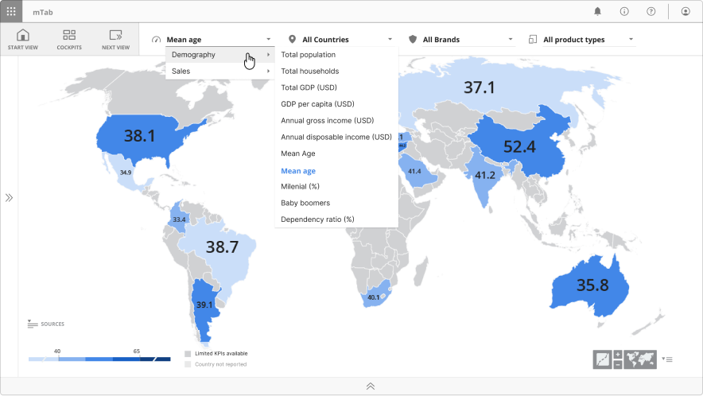
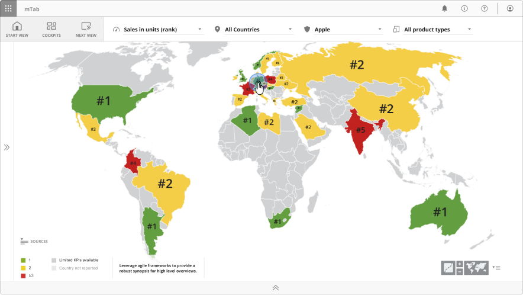
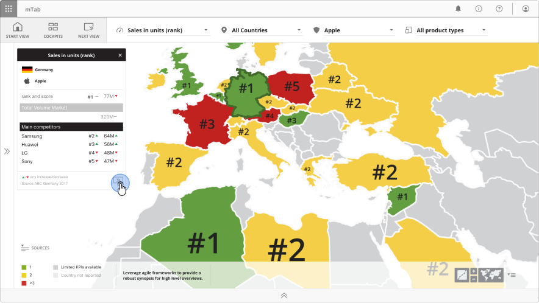
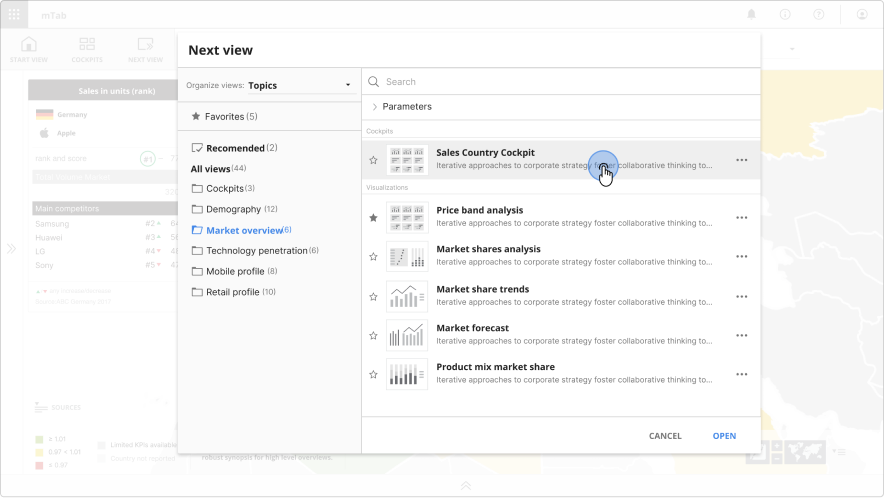
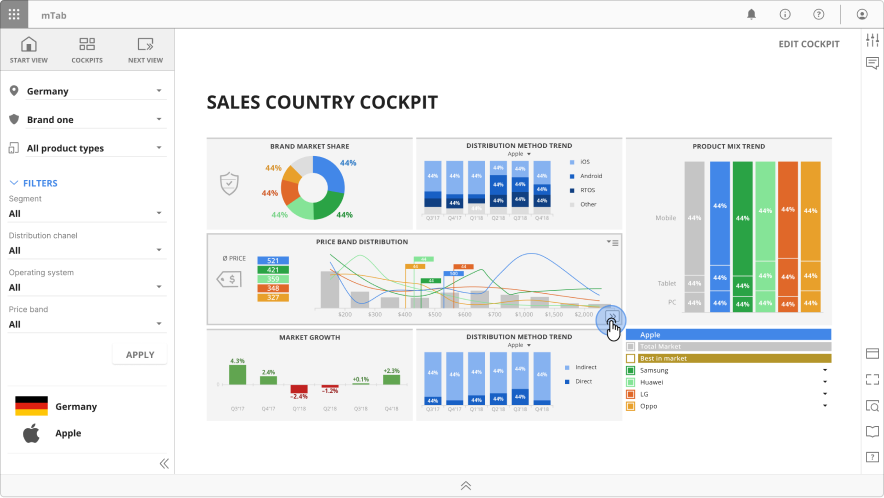
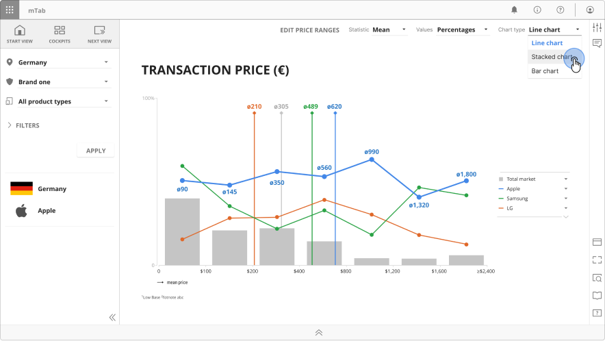

Discover & Stories
Guided data exploration and report editor for enterprise clients

Overview
Discover and Stories were companion modules within mTab platform, designed for enterprise clients.
Discover gives users a curated, interactive way to browse pre-built analytical views of their proprietary research data — no query-building required.
Stories lets users collect and arrange those views into multi-page presentations for sharing and reporting.
As Head of Design, I led the design of both modules and coordinated the team working across them.
Challenge
Not every user is an analyst. Many of the people who needed access to research data — brand managers, product planners, executives — didn't want to build cross-tabulations or design reports. They needed a way to explore standardised insights quickly, then assemble what they found into something they could present at a meeting or share with colleagues.
The challenge was designing two modules that worked seamlessly together: one for exploration, one for curation — both simple enough for non-technical users, yet powerful enough to handle complex, parameterised data across multiple markets, brands, and time periods.
Approach
For Discover, we redesigned a browsable catalogue experience with a clear navigation structure and parameter controls that let users pivot across countries, brands, and time periods without any analytical expertise.
For Stories, we designed a curation workflow where users could assemble slides into narrative sequences, add chapter pages with editable text for context, and share or export the result as a polished presentation.
The design team ensured both modules shared consistent interaction patterns — parameter controls, navigation, and visual language — so moving between exploring and curating felt like one continuous experience.
Outcome
Discover and Stories was the daily tools for our customers bridging the gap between raw data and stakeholder-ready deliverables.
Users could easy go from exploring a single data point to presenting a full competitive report without leaving the platform.
What’s next
Both Discover and Stories were dropped and all the user created content was migrated into Halo.




